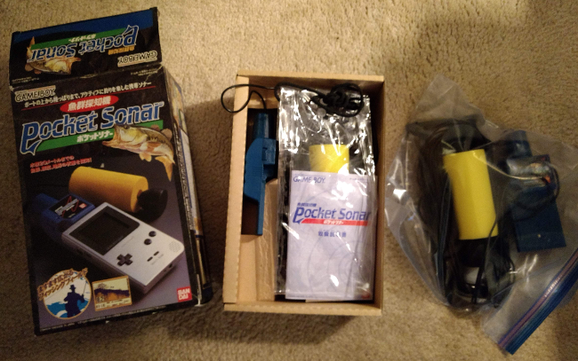
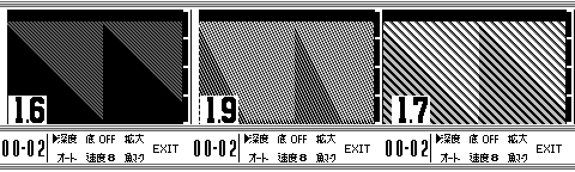
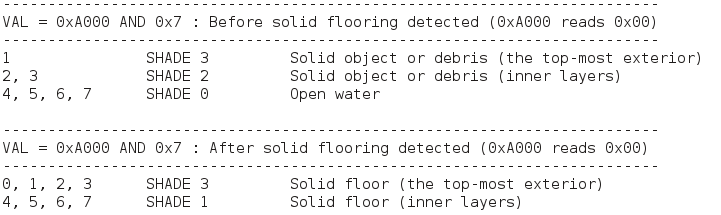
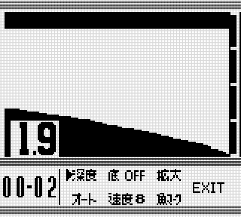
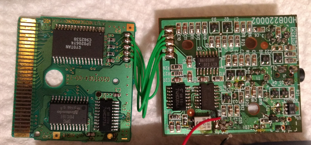

White whales
Last year, my journey into the unknown began, inspired by a simple post on Reddit. There, we all shared some of our biggest hopes on what we'd like to see emulated one day. Since then, I started methodically going down a list I'd made, chasing after rare, exotic, and forgotten Game Boy hardware. Perhaps more so than any other system, the Game Boy had a lot of "gaps" where stuff simply wasn't supported by any emulator anywhere, and barely any documentation existed. Despite my efforts so far, this is still the case; my TODO sheet contains 14 Game Boy items to emulate. I've definitely made a dent, but it's going to take a while to finish this job. At any rate, I've relentlessly pursued the unemulated, driving myself to the edge where few, if any, have gone before. At this point, it's something like a quest for preservation, like a treasure hunt to recover lost gaming history. So this is where I stand today, continuing the long hunt. This time, I've managed to snag a true beauty, a real "white whale" that I've actually dreamed about for some time.
In the summer of 1998, Bandai released a product called Gyogun Tanchiki: Pocket Sonar, certainly the oddest, strangest, and most intriguing officially licensed Game Boy "game" made at that point. The Pocket Sonar is a long, blue cart with built-in sonar hardware. A transducer connects via a lengthy cable into the top of the Pocket Sonar. The purpose of all this hardware was to probe the water via sound; the software would draw an image after receiving accoustic data, displaying local depth and any fish in the area. It was the first handheld gaming software to utilize sonar, but not the last; Bandai released a similar device called the Handy Sonar on the WonderSwan the following year. It may seem bizarre to combine sonar, fishing, and the Game Boy, but the Pocket Sonar was reasonably priced at that time for portable sonar, and it worked with an existing, popular platform.
The Pocket Sonar never left Japan, probably due to the limited appeal the unit might have enjoyed internationally. Instead, it was confined to its original country, becoming an object of fascination for outsiders such as collectors and gaming enthusiasts. For many, the price and scarcity of the Pocket Sonar meant it was something few would come to own. Most people, until the past few years, hadn't even heard of it at all. As a result, basic information regarding the Pocket Sonar was sparse. Details such as the sonar's effective range (20m) were known, but pretty much everything else was a mystery.
I remember coming across the Pocket Sonar some years back, and at once I was drawn to it. How did it work? What did it look like in action? Would I ever be able to experience it myself? Will others get to know what it was like, or will it die in obscurity? This was all before I got involved with the emulation scene, and I hoped that someone smart enough (and with enough cash to buy one) would start doing research into the Pocket Sonar. However, over the years, that never happened. I never imagined I'd be the one to take on that mantle, and even as I toyed with the idea, I realistically questioned how I'd pull it off. The logistics for reverse-engineering the Pocket Sonar (explained later on) seemed daunting, crazy even. But I've done crazy before...
That sinking feeling
Step 1 is, as always, hardware procurement. As previously mentioned, the Pocket Sonar doesn't exactly show up often. Some years, only 1 or 2 appear on eBay. Unfortunately, when I started looking around last year, there weren't any available, so I turned to Yahoo Auctions Japan. I had to go through a 3rd party service to bid on a Pocket Sonar. After a bidding war and paying a percentage to the bidding service and paying shipping, I took a decent hit to my wallet. I generally keep a budget on my gaming-related spending, both for my personal collection and research. $15 gets set aside every week into this separate account (well, it's actually just a pile of cash), and I keep strict track of incoming and outgoing transactions. Buying the Pocket Sonar was the first time I ever went into the red. I underestimated how much I was actually spending, and it took about 2 months to dig myself out of that one. Needless to say, I got impatient, fearing it might be a year or longer before a decent Pocket Sonar appeared on eBay, so I overpaid on several fronts.
But wait, it gets better! Upon arrival, I inspected my Pocket Sonar. The cart takes 4 AAA batteries to power the sonar, but when I opened the cover to take a peak, the battery contacts and springs were corroded. To my great dismay, the sonar feature, which is arguably the main appeal, didn't work at all. I tried cleaning the contacts to no avail, and worse, I managed to break off one of the springs. I attempted one last revival, giving the cleaning another go and wedging in bits of aluminum foil where the spring had snapped... and still nothing. That was quite disappointing, to say the least. I still managed to dump the game's ROM, and I did get the Pocket Sonar manual from the auction, so it wasn't a total loss. However, to get truly accurate emulation, hardware verification is a must. I either had to fix my existing Pocket Sonar through modding (probably by soldering new wire leads to an external battery holder), or purchase a new one.

I'm not too good at modding hardware. Haven't soldered anything in over 15 years. I just bought another one...
So now I have two Pocket Sonars. The Complete-In-Box one is flawless, pristine, and cost much less than my first attempt (thanks to eBay's 20% sitewide sales). The first non-functional Pocket Sonar further proved useful as I could safely open up the cart without caring about any damage. Thanks to it, I was able to take the first known pictures of the Pocket Sonar's PCB, so I don't feel all that bad about having to buy the same expensive device twice. Whatever it takes, for science.
Diving into the deep
Even with just the first broken Pocket Sonar, I was able to start reverse-engineering the dumped ROM in April. With an emulator, it's possible to arbitrarily alter various bits of the virtual hardware. By doing that, the software can be analyzed and studied based on whatever output changes. The end goal for Pocket Sonar emulation was to get the ROM to display a sonar image constructed by users themselves. Rather than trying to recreate how sound waves move through water or the low-level particulars of the sonar hardware, I wanted GBE+ to take a high-level approach. I assumed that the sonar was simply feeding data that the Game Boy could read at some memory location, and then the ROM's code translated that into an on-screen image. GBE+ would therefore only have to care about whatever bytes the sonar was writing into memory.
So, how would the sonar send bytes to the Game Boy in a way the handheld's CPU and memory could understand? The answer lies with something called a "Memory Bank Controller", often shortened to just MBC. An MBC is the specific logic and hardware built into the game's cartridge that allow access to different parts of ROM or sometimes external RAM. MBCs are most commonly used to switch ROM banks to give the Game Boy access to large amounts of data (greater than 32KB), or read/write game saves. However, specialized MBCs basically permitted game developers to create their own custom expansions. The HuC-1 and HuC-3 MBCs had their own IR diodes. The TAMA5 MBC, used in Tamagotchi Osutchi to Mesutchi, featured a real-time clock and an alarm with a speaker. Most Game Boy fans are probably aware of rumble carts on the GBC, which are slight variations of the MBC5 designed by Nintendo. MBCs generally work by having the CPU write to certain memory locations (usually the memory range 0x0000 - 0x7FFF) to trigger certain actions in response. What locations need to be written to and what they do are totally up to the MBC. The open-ended nature of MBCs means any standard Game Boy can control a wide array of unique hardware.
I had no doubt in my mind that the Pocket Sonar was an MBC specifically geared towards manipulating sonar. Interestingly enough, the Pocket Sonar's ROM header claims to use the MBC1, one of the simplest MBCs used for hundreds of early Game Boy games. In fact, the Pocket Sonar's ROM runs just fine in almost any Game Boy emulator, except for the fact that the actual sonar screen doesn't work. In something like VBA-M, it just draws a completely black screen. Everything else works without crashing or blowing up. I surmised that the Pocket Sonar's MBC was very similar to the MBC1, but it had some adjustments necessary to handle sonar. I came to dub this MBC1 look-alike the MBC1S. A while ago, when I tried to figure out MBC1 multicarts (such as Bomberman Collection), byuu coined the term MBC1M for that subset of MBC1 carts. Makes sense. The M stands for Multicart. In that same spirit, the S here stands for Sonar.
To examine what made the MBC1S different, I began logging all writes to 0x0000 - 0x7FFF and all reads/writes to 0xA000 - 0xBFFF. This would capture how the MBC interacted with any special internal registers. Immediately, I noticed that Pocket Sonar was trying to write to registers that handle external RAM on regular MBC1 carts. Curiously enough, however, the Pocket Sonar has no such RAM. It saves nothing. Upon booting, the Pocket Sonar wrote "1" to 0x6000. Normally this would switch between ROM and RAM banking modes, but I noticed the Pocket Sonar never wrote "0" to switch back and forth. On a hunch, I guessed that this was the game activating the sonar hardware.
Next, when accessing the sonar screen, I observed that the code repeatedly wrote to 0x4000, then read from 0xA000 a bunch of times. The 0x4000 register on the MBC1 is supposed to control which RAM bank to read from/write to, or it acts the upper bits of the current ROM bank number for larger ROMs. Both are inapplicable for the Pocket Sonar (as it has no RAM and its ROM is too small). However, to me this looked like it was telling the sonar to start sending pulses; from there it would then read any feedback from 0xA000. Cart RAM is always found at the address range 0xA000 - 0xBFFF, but the MBC1S seemed to be hooking up something else. Rather than RAM, the Game Boy would read a byte representing part of the sonar image.
Uncharted waters
So now that I had a bunch of clues about how the MBC1S was supposed to work, I decided to put my theory to the test. If 0xA000 did map to sonar data instead of cart RAM, generating a sonar image while emulating the Pocket Sonar was simply a matter of returning the right bytes whenever the Game Boy read that memory location. Once I figured out the format, I could forcibly manipulate the return value of 0xA000 accordingly and make the software draw whatever I wanted. Before any of that, however, I had to see what happened when I fed the emulated Game Boy random values for 0xA000. The most important thing was to verify that the sonar image did in fact change; after that I needed to see exactly how it changed.

What better way to do science than to throw things and see what sticks to the wall?
After tossing a bunch of bytes back when reading 0xA000, I started to come away with a clearer view of what the Pocket Sonar was doing. Only the first 3 bits of the byte at 0xA000 seemed relevant; the others were outright ignored. Basically, the Pocket Sonar is only looking for values of 0 through 7. Depending on what value it found, a different color pixel was plotted on-screen. I also noticed that the Pocket Sonar uses only a small portion of the screen to display the sonar image. The area spans 160x96 pixels on the Game Boy's screen, and it's constantly updated to show the most recent sonar data. I labeled this the "frame" since it captured a picture or snapshot of what's underwater. The frame scrolls in slowly from the right, and once done it loops again with any changes the sonar detected.
Decoding the frame's data was the next obvious step. Determining the frame size actually helped a great deal here, as it hinted how many reads to 0xA000 corresponded to each pixel. The MBC1S always sent pulses, then read back 0xA000 numerous times. I guessed that whenever it sent out a pulse and read back the sonar data, it would have to draw a 1x96 section of the frame. After poking the assembly code inside the ROM to confirm my suspicions, I found out that exactly 1 read to 0xA000 equaled 1 pixel of the 1x96 section. The format was amazingly convenient and simple; nothing convoluted or esoteric going on here. Thanks to fooling around with the return values of 0xA000 so much, I put together what values produced what colors. This portion was a little more complicated. There are actually two coloring schemes used, one for before any ground or flooring is detected, and one for after. With SHADE 0 being the lightest color, and SHADE 3 being the darkest color, the Pocket Sonar uses this:

Having researched all of this made it possible to emulate the Pocket Sonar in GBE+, again, by handing it tailored data to create a specific sonar image. Rather than use some clunky database or custom binary file, I decided the best, most user-friendly option was to grab an image as the source. This makes editing clear, easy, and accessible. Additionally, thanks to the SDL library, GBE+ is well suited for opening images files and retrieving any pixel data. In effect, GBE+ merely needed to examine the colors and see if they matched SHADE 0, 1, 2, or 3. If so it would fill up a buffer with the bytes to send to 0xA000. Of course, GBE+ had to account for the ground as well to switch color schemes, but that fortunately proved rather trivial. The result was the first successful attempt ever to recreate the Pocket Sonar via software.

Something fishy's going on here
Great! The Pocket Sonar was showing any sort of sonar image I wanted. Time to call it a day and go home, yeah? Well, there were a couple of other things to investigate, chief among them being the fish finder functionality. The Pocket Sonar wasn't just designed to let fishers see into the water and map out the depths below. It was designed to let fishers... er, fish. The main use of the Pocket Sonar was to detect aquatic life to give people an advantage. This particular project was far from complete without emulating that. I spent a great deal of time poring over the code inside the ROM, but in the end it was much quicker and efficient to sort of brute force my understanding of the Pocket Sonar's fish finder. The most direct method of testing was to make a sonar image and see which pattern and combinations of pixels tricked the Pocket Sonar into seeing fish:

It might look bizarre, but drawing random lines helped a lot in reverse-engineering this feature.
Apparently, the fish finder uses a "grid" of 8x8 cells spread across the frame with a slight Y offset of -1. If any sonar value in the first column of any cell is 0x00 or 0x01, the Pocket Sonar draws a fish in that 8x8 cell. It doesn't matter if the other 7 columns have values of 0x00 or 0x01; the software ignores them and treats them as debris. Only the first determines whether or not the Pocket Sonar thinks a fish is nearby. The grid position tends to change whenever several menu items are toggled, such as magnification, AUTO mode, or the fish display option itself.
After this was done, several other enigma remained. One oddity that I came across was the "demo" mode. If the Pocket Sonar runs for a while on the title screen, it displays a brief presentation of the sonar screen in a hypothetical body of water. The most interesting thing here is that it draws the ground with 3 colors. In all my tests, I could not reproduce this. I tried cycling through thousands of combinations of random values from 0xA000, but nothing like the demo screen ever showed up. It should only be possible to use 2 colors once the ground starts rendering. The demo doesn't read 0xA000; instead it copies pre-rendered tile data directly into VRAM, and it wasn't running any notable code that is actually used on the real sonar screen. Additionally, I went out to a local pond and gave the Pocket Sonar a splash test myself; still only 2 colors showed up, not 3. I'm pretty sure the demo screen just isn't realistic. Perhaps that part of the Pocket Sonar was programmed before the sonar rendering code was finished, or the rendering code was later changed to only use 2 ground colors. In any case, it looks to be a genuine oversight.
Yet another strange discrepancy is the presence of a 30m probing depth option. The Pocket Sonar box and manual boast that the hardware can easily ping depths of 20m, but evidently it's designed to go further than that. It could be the case that accuracy at that depth isn't gauranteed, so the 30m option comes off as a nice bonus. For what it's worth though, the software portion of the 30m option runs as expected with no errors or anomalies. Needless to say, I didn't have access to water that deep near me when I tested, but perhaps someday I'll try it out on Lake Michigan.
Finally, there's the matter of incompatible Game Boys. As I was testing in real water, I made the surprising discovery that the Pocket Sonar does not work with Game Boy Color or Game Boy Advance handhelds. I got to a fishing spot, whipped out my Atomic Purple GBC only to find out that the sonar screen drew an all-black image. This initially puzzled and disheartened me. There should have been no way that my second Pocket Sonar was also somehow broken! Checking and re-checking everything, I saw no problems. As I headed home, I began to wonder if the Pocket Sonar could only work with certain Game Boy models. This sort of behavior isn't unheard of. When I tackled the Barcode Boy last year, that accessory would only work with the original Game Boys, the "gray brick" ones. Another trip, this time with a Game Boy Pocket, proved successful. So what's going on here? My guess is that the Pocket Sonar relies on some hardware behavior specific to older Game Boys when accessing the MBC1S. The GBC was released later that year in 1998, but by then the Pocket Sonar had already been developed and produced, so Bandai wouldn't have had the chance to do any sort of testing. While I initially felt disappointed, fearing that I'd never get to see the Pocket Sonar in action, later I was pretty thrilled to find out brand-new information.
Getting your feet wet
I can't stress enough how important it is to actually test real hardware. Verification matters a lot when it comes to preserving old hardware and software. While I could have done a reasonable enough job of emulating the Pocket Sonar solely by reverse-engineering the software side of things, I couldn't be satisfied until I'd laid my eyes on the Pocket Sonar working in real-time. Even though I had already implemented everything in GBE+, I decided to take a hike and do some field testing. Consider for a moment that if I didn't emulate something about the Pocket Sonar quite correctly, and if I never ventured outside to confirm that's how it's actually supposed to be, how long would that error go unnoticed? Who else would be willing to go through all the trouble to test it themselves? Not many likely. Now imagine that bad or incomplete information gets passed on for years, decades even, and perhaps long after there's any hardware to test it on? That's a poor situation we want to avoid at all costs. So once again, it's imperative to do more than guess what the emulated result should look like; you have to see it for yourself if possible.
To further illustrate this point, let us consider the "magnification" feature of the Pocket Sonar. Normally the Pocket Sonar displays a sonar image starting from the waterline down to the selected probing depth, for example, 0 - 2m, 0 - 5m, 0 - 10m, and so on. With magnification, it cuts the viewport to the lower half, for example 1 - 2m, 2.5 - 5m, 5 - 10m, and so on. This feature could only be accurately tested on real hardware in water, as the manual gave no examples of the function being used. The most logical assumption is to just use the lower half of the frame and enlarge it 2x. Ultimately, however, we need to know if that's the right approach; fortunately, it is. Testing this firsthand was the only way to find out for sure though.
Another good reason for real-world testing is documentation in the form of pictures or video. The Pocket Sonar seems to be quite elusive in terms of multimedia. There are plenty of pictures of the hardware itself all boxed up, but I've only seen one image of the Pocket Sonar in water. Aside from that, there's a recent video of the Pocket Sonar working on a Super Game Boy (yes, it worked on that thing), but no one seems to have captured it while the sonar is active underwater. Video and photographic evidence of how a device operated provides important context in terms of preservation. Eventually the hardware will fail, die, or otherwise be rendered useless, given enough time. So, the more media we have of something, the better we'll understand it once all the originals are gone. To that extent, I tried capturing the Pocket Sonar doing its thing:
{kind=link}
Nothing really too exciting, but it's always good to have more documentation on hand.
Again, getting one's hands dirty yields solid information and sheds light on things that might have otherwise faded away unnoticed. As I mentioned earlier, I purchased 2 Pocket Sonars, one with a working sonar, the other in need of repairs. I popped open the broken one and took photos inside the cart. To my knowledge, no one's done this before. The Pocket Sonar is viewed as costly collectible item, so it's understandable that few would risk potentially damaging theirs by taking it apart. Nevertheless, I picked up a security bit screwdriver and got to work. For my efforts, I came upon a very shocking revelation. The Pocket Sonar is actually two separate PCBs linked together with some wiring. The MBC1S is a fusion of the MBC connected to the larger sonar hardware like such:

Once again, in the interest of fully documenting the Pocket Sonar, I took a lot of photos. Anyone can grab them all right here if they want the complete set of shots. I also took the liberty of scanning the whole manual for those who're wondering what it looks like inside. All of my research is available in GBE+'s documentation, and it's also available on the new Dan Docs webpage (It's like Pan Docs but for all the insane Game Boy stuff out there).
Setting sail
Well, it's time to close this chapter of Edge of Emulation. It was quite the treat to finally preserve one of the rarer pieces of Game Boy history. Hopefully I've managed to contribute as much as I could to our overall knowledge regarding the Pocket Sonar. Sometimes, when I'm bored, I look up all kinds of strange gaming hardware and accessories, but I'm always a bit disappointed in the lack of detail available online. With the Pocket Sonar, there are a few good Spanish articles that go a bit deeper than most wiki entries, yet the rest of the search results seems to be "Top 10 Weirdest Game Boy Things" or "5 Game Boy Accessories You've Never Heard Of" and such. Usually their descriptions of the Pocket Sonar are brief and only echo the same few facts over and over again. There just isn't a lot of substance, not for inquisitive minds at least. As they always say, be the change you want to see, so here I am concluding this article.
I've fried one of the bigger fish, but there are still more out there that haven't been emulated. Sometimes it feels like I never truly reach the "edge" because there remains so much left to do, so much left to conquer. It's not just the Game Boy either, consoles from the Nintendo Entertainment System all the way to the Gamecube and Wii have many odds and ends that have yet to be properly emulated. Video game preservation is a massive undertaking, but as daunting as it seems, we'll eventually save what needs to be saved. Even if it's piece by piece, we'll definitely do it because we care. I'm currently compiling a list of a bunch of unemulated games, accessories, and hardware features for multiple platforms with the hope that others will join the cause. Maybe someone will see something that tickles their fancy and jump in.
With a task so huge, where to next? Typically, I'm low key and quiet about my future adventures, but lately I haven't been so subtle about my plans. The moment has come to go forth to another unknown frontier, combining the powers of the Game Boy Color and the information super highway for online mobile gaming. Resurrecting abandoned, long-dead servers with little more than screenshots and client-side game code sounds like a large order, but that's exactly where I'm headed. I leave the watery depths of the Pocket Sonar for cyberspace. See you all online!